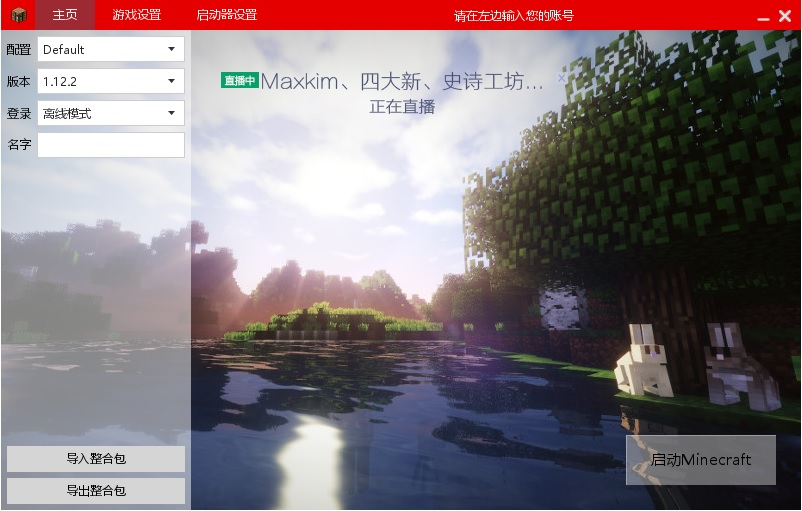
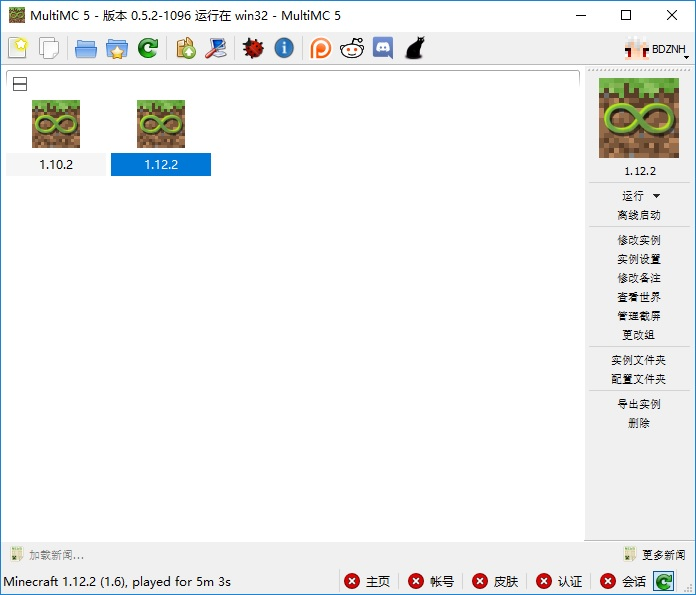

Minecraft 介绍
一款超高自由度的沙盒游戏。
现在已经支持以下平台
- Windows
- Linux
- Mac OS
- Android
- Windows Phone(已经停更)
- Microsoft: Xbox
- Sony: PlayStation
- Microsoft: Xbox One
- 任天堂: Wii U
其中，由Java编写的版本(Mojang发行)可用于Windows、Linux、Mac OS，现在玩法最多的也是Java编写的版本。
2017.09.26，新版Minecraft可以通过Xbox账号，将Windows 10 PC(Windows Store)、Android、ios、平板、Xbox One和虚拟现实平台进行联机。似乎有一点Windows 10大统一的势头。
Java版
Java版本的玩家最多，围绕Java版展开了很多第三方的功能。
服务器篇
官方版本
Mojang提供一个jar文件，用于开启服务端，为官方版本，官方版本功能最少。可以前往https://minecraft.net/zh-hans/download/server获取最新版的官方服务端。使用方法可以百度一下，或者到本站的教程查看。
第三方版本
官服使用起来有诸多限制，有许多很好用的第三方服务端
这些第三方服务端大都开源，可以自行编译。不过，大多数情况下，配置编译环境会难倒一批人，按照Wiki一步一步来，会发现照样没办法编译成功。所以直接下载其他人编译好的版本就好了。这里提供一个镜像站https://yivesmirror.com/，安全性未知，自行斟酌。
我自己编译了Spigot、CraftBukkit，收集了Mojang的版本，放在了https://coding.net/BDZNH/p/Minecraft-Server/。
按照实际体验来看，官服的表现并不如第三方服务端，Spigot表现据说优于Craftbukkit，OS的选择上，在腾讯云的1G RAM + 1 Core CPUVPS上，Cent OS优于Ubuntu。
基岩版
2018年，mojang 官方公布了基岩版的测试服务端，截至 2019.03.02 ，依旧是测试版，不过使用体验来看，已经很不错了，目前没有发现什么问题。
基岩版使用教程可以查看: MC 基岩版(PE) 服务器来了
2017的E3大会上，微软将之前的PE版、主机版等，更名为基岩版(别问我为什么取这么个名字，我也觉得好奇怪ε=ε=ε=(~￣▽￣)~)，官方并未提供基岩版的独立服务端，而是在程序内内置REALM，每月30+￥的订阅服务。
不过，还是有第三方的服务端的，但是更新脚步较慢，不如Java版本。
- Nukkit
- Genisys
- PocketMine(已经很长时间没有更新)
Windows 10 版本由C++编写，在我的渣机上，表现远远超过Java版本。
碎碎念
Minecraft发布之初，作者也没有想到它会壮大到如今的程度。在折腾Mod的过程中，认识了一个插件——Optifine，安装插件之后，FPS飙升，Intel的核显都能跑到60，在Windows和Linux上都有很明显的提升。
在基岩版中，微软官方引入了皮肤包、材质包，这些原本并未被包含在官方的Minecraft中，而是出现在第三方的服务器上，比如hypixel什么的。
Mojang官方提供的个性化服务仅有皮肤和披风，直到微软收购Minecraft之后，微软加入材质、地图、皮肤包等等元素。微软将Minecraft引入全平台(目前只有sony拒r让其PlayStation平台加入，不知微软与索尼商榷得怎么样了)，而Mojang继续开发Java版本，Java版本依旧没有多少提升，在性能上被微软发布的C++版本甩开很远。Minecraft对配置要求挺高，但是通过Optifine来看，这个锅可不能让jvm来背，而是Mojang的不作为。
大部分主机平台的硬件配置并不高，但是主机上的游戏体验远高于同等配置的PC，因为游戏厂商专门针对主机的硬件做优化(其实从这里可以引出ios与安卓之争，iPhone的型号并不是很多，从4代到最新的8代，所有机型加起来，也就十多二十个，ios只用针对这几个型号，再加上数量众多的应用，给iPhone带来了优秀的体验，而安卓，太多了！)，借用知乎一些答主的话来说，能躺着把钱挣了，为什么要坐着呢？
成就Minecraft的，不是Mojang，也不是微软，而是数量众多的第三方服务器和玩家，他们的创造力最强了吧！
不得不承认的是，Minecraft本身并不是一个很吸引人的游戏，入门的门槛相对来说，确实有些高了，没有人带领，会在初期就放弃掉，再加上不高，但是对于国人来说挺高的正版授权费用，会损失不少潜在玩家。不知微软能把它带往何方。
启动器
官方启动器
可以自行配置Java运行环境以及桌面快捷方式的安装包，仅限Windows：
MSI格式安装包：https://launcher.mojang.com/download/MinecraftInstaller.msi
EXE格式安装包：https://launcher.mojang.com/download/Minecraft.exe
单启动器，需要玩家手动安装Java运行环境：
Windows: http://s3.amazonaws.com/Minecraft.Download/launcher/Minecraft.exe
macOS X: https://launcher.mojang.com/download/Minecraft.dmg
Linux/其它: http://s3.amazonaws.com/Minecraft.Download/launcher/Minecraft.jar
第三方启动器
- HMCL: https://github.com/huanghongxun/HMCL/releases
UI不错，自带客户端下载，可以自定义启动参数，可以正版登录、离线登录，一个使用人数相当多的第三方客户端。跨平台。

- MultiMC: https://github.com/MultiMC/MultiMC5/releases
UI略丑，仅支持正版登录，有forge、mod、截图和地图管理，很不错。跨平台。

一点点相关
Bilibili上有一位up主持续更新了一部用Minecraft拍摄《三体》，很赞的作品，地址在这儿:https://space.bilibili.com/614801#/
资讯
2017.11.19 水域更新
水域更新！视频
Minecraft的海洋将获有史以来最大的更新！ “水域更新”为游戏注入了许多新的功能，包括珊瑚，海带，更多类型的鱼，海豚，可探索的沉船，符合物理学的水等等！新改造的海洋将需要一个新的武器来保护自己，所以水域更新也将引入三叉戟。这种武器不仅可以向敌人投掷，而且可以在近战中使用。即使投掷之后，忠诚魔法也会让你回到你的身边，而像Impaler和Slipstream Dash这样的魔法将会……好吧，我们会让你尽情发挥你的想象力！水域更新即将更新到游戏！
NINTENDO SWITCH和史诗图形包
我们也很想尽快发布史诗图形包。 虽然原定于今年发布，但还有很多工作要做，而且我们不准备在2017年发布它。我们将在明年发布，更多信息将很快更新到Minecraft.net上。
另外，NS依然会更新全平台联机的基岩版Minecraft，但要等到2018年了。任天堂一直是一个很好的合作伙伴，我们非常兴奋能够把Switch玩家带入其中，但是，我们需要确保我们能提供尽可能最好的体验。因此，新版本的Minecraft将于明年发布到NS、 Xbox One、PC、手机和NS上，都在2018年一起玩多人游戏Minecraft
1.13正式版 水域更新
海洋更新的更新
一般
- 所有不死生物现在会下沉了
- 水下的能见度变了
- 你的视力在水下越呆越好
- 大修了世界生成器。
- 大修了命令
- 新增了新的世界类型Buffet
- 允许你创建仅有独特群系的世界
这个类型还将更新
添加了一些声音
- 新加了三首音乐
- 增加了水下环境的音效
- 增加了游泳动画
- 在水下按冲刺键开始游泳
- 添加了数据包
- 允许编辑合成表，标签，战利品表、函数、进度
- 添加了新的进度
- 现在一些方块可以含水了
- 方式是用水桶右键
- 添加了一个优化世界的按钮，它将把世界升级到现在的游戏版本
方块 - 添加了蓝冰
- 在冰山中出现
- 新加了珊瑚块和珊瑚扇。。。还有珊瑚
- 添加了潮涌核心
- 用海洋之心和螺壳合成
- 这会让你的水下生活更加舒坦
- 添加了海带块
- 九个干海带合成
- 添加了海带和海草
- 普通南瓜不在有脸了
- 添加了海泡菜
- 添加了气泡柱
- 用岩浆块或者灵魂沙来制作一个气泡柱
- 添加了木头方块
- 使用四个原木制作
- 用斧头右键可以剥木头的皮
- 添加了新的楼梯和半砖
- 为六种木材都加了相应的木制品：压力板、活板门、按钮
- 海龟蛋
生物 - 添加了热带鱼
- 添加海龟
- 会在沙滩上产卵
友好生物 - 添加了海豚
- 如果你喂它鱼，他会引导你找到财宝。
- 请千万不要袭击他们，否则小心被围殴。
中立生物。 - 添加了溺尸
- 可以在海洋与河流中生存
- 可能手持三叉戟
- 僵尸在水里过久就会变成溺尸。
- 添加了幻翼
- 你不睡觉他们就会让你彻底长眠。
- 掉落膜。
- 添加了鳕鱼鲑鱼还有河豚
- 把马的画风改成了和别的生物一样
- 去掉了HIM
物品 - 添加了三叉戟是一种新武器溺尸会掉落它。即是近战也是远程
- 添加了三叉戟的附魔
- 添加了用桶装鱼的能力
- 添加了地图的标记
- 手持地图，右键旗帜
- 海洋之心可以在宝藏中发现
- 添加鹦鹉螺壳
- 添加了幻影膜 这个可以让你去修鞘翅，也可以用来酿造缓降药水
- 添加了海龟壳 小海龟长大后会掉落
- 可以酿神龟药水 抗性3和减速4 缓降药水
- 添加了干海带
- 为所有生物添加了蛋
生物群落 - 添加了多个海洋生物群落
- 添加了珊瑚礁
- 添加了水下洞穴和水下峡谷
结构 - 添加了沉船
- 水下遗迹，添加了冰山
转于MCBBS http://www.mcbbs.net/forum.php?mod=viewthread&tid=807129&extra=page%3D1%26filter%3Dtypeid%26typeid%3D204 @乙烯_中国